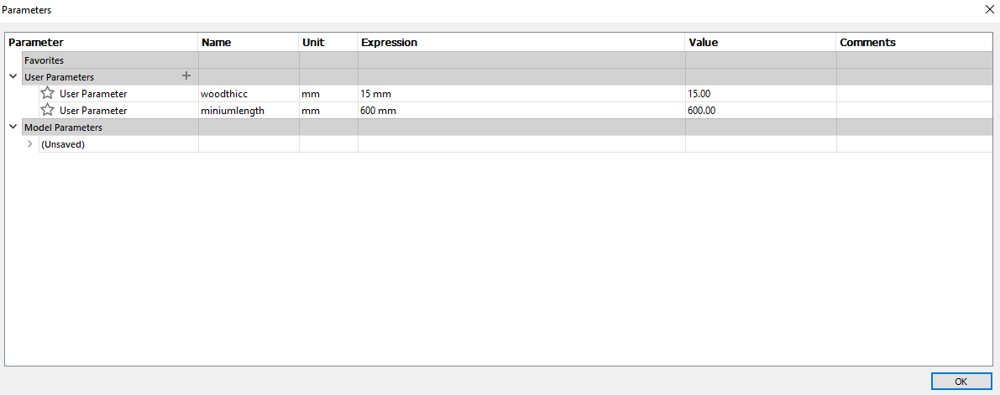

(^∇^*=) This page is rather long! Free free to select the option from the navigation bar below. (=*^∇^)
Competency test

For our competency test, I am required to make a coaster.
Setting up the machine
Step 1

Start by inserting your model in. Remember which portion you have to create a pocket or cut through.
Step 2

Now set up area to have tabs so your model does not move around during final cut. It is required to have at least 2 tabs.
Step 3
Save your file before setting up your zero points. it is advised to find a flat area of your board to set up your Z axis.
Step 4

Once you are satisfied with your positioning, it's time to wear some ear protection and get to cutting!
Step 5
 |
|---|
After your cnc is completed, clean up by giving the area and your part a good succ using a vacuum.
Step 6
 |
|---|
After cleaning, remove your part by cutting off the tabs using a chisel.
(the photo of the left is from my friend's coaster. Hence the shape is different)
Step 7
Finish it off by giving the coaster a good sanding using a rough sandpaper for the burr and blemishes and high grit to finish it off.
You can oil the coaster to waterproof and make it nicer at this stage.
Model used
This is the Dog stairs I created. As required by my teacher, The model is required to fit inside a "1200mm x 1200mm" and a thickness of "15-18mm"
Making my model
I started by setting up a parameters to make things easier for me.
Now set up a base for my stairs.
As I do not like to waste the space below the stairs, I set it up so I can keep my dog's toys below the stairs.
Remember to making connecting tabs for each part!
 |
|---|
Now to add the stairs
 |
|---|
..And the finishing steps.
Important features to have
 |
|---|